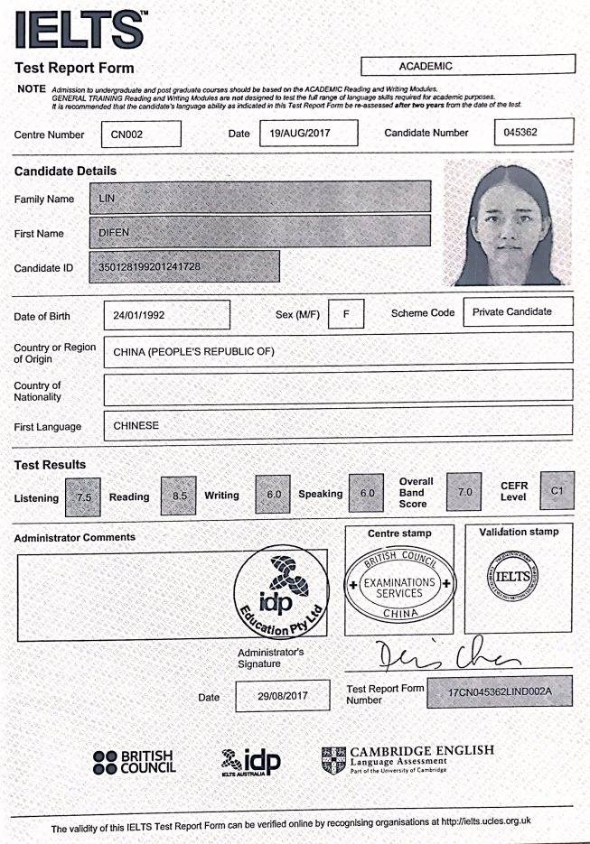

School of Public Affairs, Xiamen University
Xiamen, Fujian Province, 361005, P.R. China
Phone: (0086) 159-5927-1626
Email: difenlin@outlook.com
RESEARCH INTERESTS
Regulatory Policy，Environmental Regulation , Public Policy, Comparative Politics
EDUCATION
2017.09-current Ph.D. Candidate, Public Management, Xiamen University, China
2014.09-2017.06 M.A., Public Management, Xiamen University, China
2010.09-2014.06 B.A., Property Management, Beijing Forestry University, China
JOURNAL ARTICLES(CHINESE)
Under Review and works in progress
“Decentralized Governance, Policy Implementation Gap and Environmental Regulation
Performance—An Empirical Analysis of Panel Data in China”，(Draft paper in progress).
“The Change of Fertility Intention and the Reconstruction of Fertility Policy in the Process of Aging”, (Under review with editors).
Published
“Study on Influence Mechanism of Service Quality on Customer Value and Customer Loyalty in Property Service: Based on the Moderating Effect of Living Level”, Collected Essays on Finance and Economics, No.3(2017):92-102.
“The Integration of Social Governance in the Process of Urban Homogenization”, Journal of Fujian Provincial Committee Party School of CPC, No.6(2015):23-28.
“Public Satisfaction of Community Intelligent Service Based on Factor Analysis—A Case Study of
Zhongguancun Street of Beijing”, China Circulation Economy, No.5(2013):16-17.
ACADEMIC SKILLS
Languages
Chinese (native)
English (advanced (reading, listening), basic (writing, speaking), IELTS 7.0)
Statistical Software
Spss (proficient), Eviews (proficient), Citespace(proficient), Stata (basic), Amos (basic)
HONORS & AWARDS
2017 “Three Good” Student, Xiamen University, China
2015 National Scholarship for Graduate Students, Xiamen University, China
2014 Excellent Graduation Thesis ; Excellent Graduates, Beijing Forestry University, China
APPENDIX：English Language Certificate
